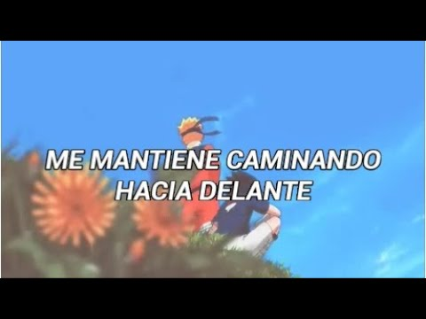
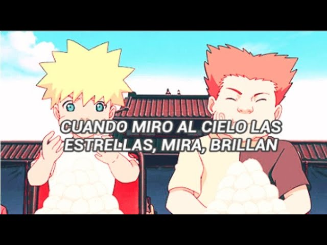
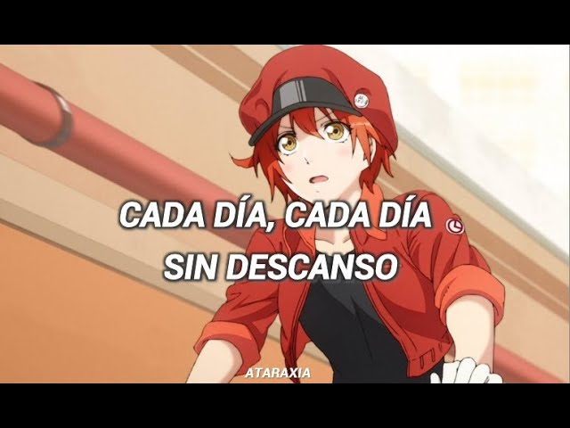

Derechos de Autor:
Para reclamar cualquier cosa sobre esta página podéis hacerlo y llegar a un acuerdo al siguiente correo.
mundo.animes.y.mangas@gmail.com
Para no confundir con spam se recomienda poner en el asunto "Copyright".
La mayoría de animes de esta página no se almacenan en nuestros servidores.
Sección:
Animes:
La mayoría de los animes pertenecen a la siguientes páginas:
Monos Chinos
Mundo Dragon Ball
Música:
Toda la Música pertenece al canal de Youtube de:
Ataraxia
Michi To You All | Naruto Shippuden Ending 2 | Traducido Al Español
Shooting Star (Nagareboshi) | Naruto Shippuden Ending 1 | Traducido Al Español
Bacchikoi!!! |Naruto Shippuden Ending 8| (Subtitulado al español)
Hataraku Saibou [Cells at Work] - Opening Sub Español
Fotos de la sección: "Animes"
Música
Fans para fans:
Todas las imagenes no nos pertenecen, aquí dejamos donde las hemos copiado:
 Jesús (Creador)
Jesús (Creador)
Jesús (Creador)
Jesús (Creador)